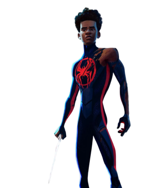

page 1
page 2
Page 3
Dropdown link
page 4
Another action
Something else here
Miles Morales é um adolescente do Brooklyn que foi mordido por uma Aranha Geneticamente Alterada e se tornou o Homem-Aranha da Terra-1610 após a morte de Peter Parker
